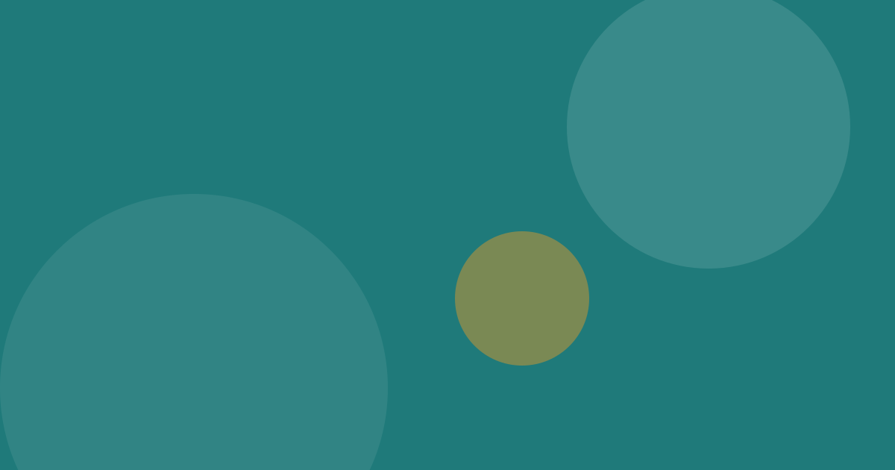

Why Wellness Is More Than Just Physical Health
Good health matters, but a well-lived life rests on more than a strong body. Here is a wider way to look at wellbeing.

A wider view of wellbeing
Physical health is the foundation most of us think of first: sleep, food and movement. Yet people who look healthy on paper can still feel anxious, lonely or stuck. This is an observation from everyday life, not a clinical claim. Wellbeing seems to grow when several parts of life are cared for together.
The parts that are easy to overlook
Money worries can disturb sleep. Strained relationships can drain energy. A lack of purpose can make healthy routines feel pointless. Each area influences the others. Read how financial wellbeing shapes daily life or explore small habits that support a happier mind.
A gentle starting point
Choose one neglected area and take one small step this week. Wellness is built gradually, not through one dramatic change. For personal health concerns, please speak with a qualified healthcare professional.
Key takeaways
- Wellbeing is physical, emotional, financial, social and spiritual.
- The areas of life affect one another.
- Start small and stay consistent.
Sources and further reading
These links offer general information. Always check the source for the latest details.
This article shares general information and personal perspective. It is not medical, financial or professional advice. See our disclaimer.